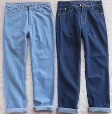

FASHION TERBAIK
1.Kemeja
Kemeja adalah sebuah baju,jenis pakaian ini bisa dipakai atau fashion
(mode) yang digemari baik oleh pria maupun wanita.
bahan dari baju ini juga tidak mudah panas dan enak untuk dipakai
sehari hari penampilan dengan kemeja terbilang rapi. pakaian ini pertama Kali
di daratan eropa dengan sebutan , namun pada pertengahan 1800 an
mulai dikenakan sebagai pakaian wanita.
2.Celana

Celana telah dipakai kaum lelaki dari masa ke masa. Dikawasan Eropa celana pertama Kali
dipakai oleh suku gauls dan ras germanic tertentu. celana adalah pakaian luar yang menutup
pinggang sampai mata kaki, dan ada dua kategori umum dari celana adalah celana panjang dan celana pendek
ada banyak jenis celana contohnya celana pantalon, celana sepan, celana kombor,celana cutbrai,celana pangsi dll